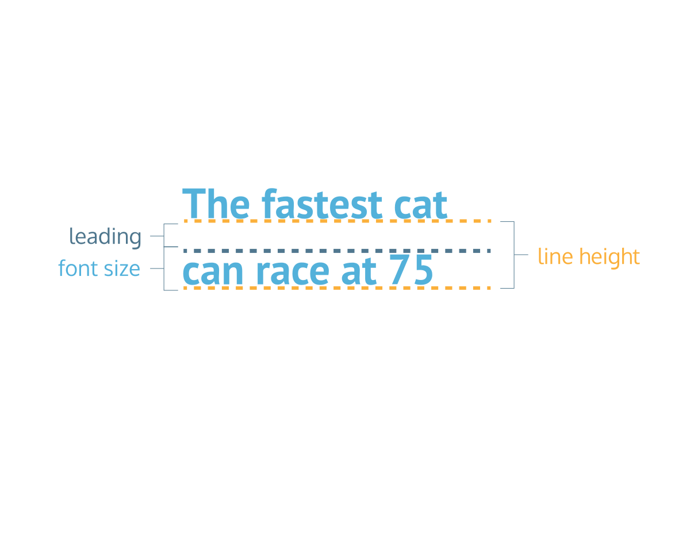

Heading tags should create a heirarchical outline of content, without skipping levels. This helps to:
Strive to be concise and break things into headings and lists wherever possible
Headings should have more space above them than below to clearly connect them to their content, equidistant spacing doesn't provide this
Use real text as opposed to images of text, which can't be understood by screen-readers, can't be magnified as well, and are more taxing to load
Often effective for the page title to have its own font, and perhaps certain subheaders have a third font
Generally effective for most text to be in a serif font, and headings or subheadings in a complementary sans-serif font, but this varies
Only use 2-3 typefaces per page, and find other sources of visual contrast beside typeface if you feel the need for more than 3
Also create contrast between different pieces of text with style, size, weight, color, and case
Ensure fonts are large enough (usually at least 16px) and have sufficient contrast between foreground and background
Always avoid blue fonts if it is not a link because it will confuse users trying to click on it thinking its a link
Whitespace: Give each block of text its own space with sufficient whitespace around text and other elements, like a room it shouldn't be cluttered, titles shouldn't crowd subtitles, paragraphs shouldn't crowd images, etc.
Leading: Space between lines, make sure there is enough space between lines to promote legibility. alter with css line-height property.
Tracking: Space between the letters and the words applied consistently across whole block of text. Alter with css letter-spacing property. Too little tracking will make words appear cramped, increase to make more legibile
Kerning: Space between specific letters in text as opposed to across whole block of text, should be set by font designer and you don't normally worry about it. May want to tweak specific spacing of letters in a title
Conciseness: Average internet paragraphs are only 1-3 sentences. Users will skip past long text blocks. Avoid sentences and paragraphs if a list could be used or if use could click through to details if desired
F-Shaped Skimming: Users scan left side of screen before right, and top before bottom, users jump back to left side of screen after finishing a line of text. Cater to this pattern, e.g. right-aligned text is likely to be skipped over
Line Length: Ideal line length is 50-75 characters, between users feeling too frequently interuppted by line breaks and positive feeling of making progress with each new line
Columns: Sometimes columns are an effective way to keep line lengths short enough. Columns tend to make users not travel across screen but rather keep going down.
Primacy and Recency: Users are most likely to notice and remember the first and last elements of a list or page, which should be considered in placing content you want users to remember
Image Pairing: Users are drawn to images, so you can pair text with an image (like a card) to draw them to the text, but you don't want image to overshadow text completely